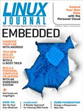

Shutdown Archive web server
Search:
Linux Journal
Issue #234/October 2013

Features
Be a Mechanic...with Android and Linux!
by Bill Childers
Decode Your “Check Engine” light.
Create a Mini PC or Server with Olimex's Olinuxino A13/A13Micro
by Ronald Kurniawan
Build a capable Linux personal computer or server with a cheap embedded system.
A Handy U-Boot Trick
by Bharath Bhushan Lohray
U-Boot over LAN.
Indepth
The Personal Cloud
by T.Rob
What happens when you take all the functionality of enterprise commercial software and make it available to individuals? We're about to find out.
Columns
Reuven M. Lerner's At the Forge
Zurb Foundation
Dave Taylor's Work the Shell
Image Manipulation with ImageMagick
Kyle Rankin's Hack and /
Command-Line Cloud: rss2email
Shawn Powers' The Open-Source Classroom
It's a Bird. It's Another Bird!
Doc Searls' EOF
The First Personal Platform—for Everything
In Every Issue
Current_Issue.tar.gz
Letters
upFRONT
New Products
Archive Index
Shutdown Archive web server
Search:
Copyright © 1994 - 2018
Linux Journal
. All rights reserved.